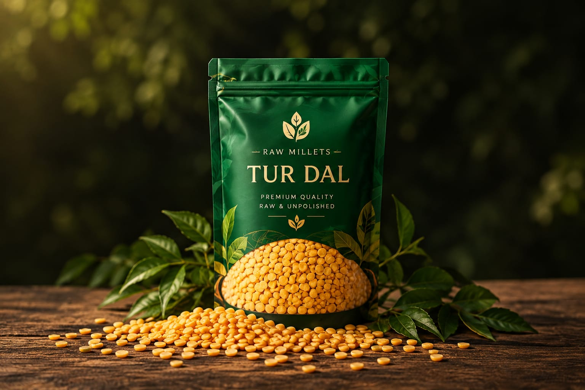

OUR STORY
From Grain
to Raw Millets.
Raw Millets began with a simple idea: let the grain speak for itself. Our journey is about traditional dals, careful selection and a clear focus on raw, unpolished grain.
We work to make grain size, quality and variety easier to understand — so every dal has a story beyond its packet.
Know More →